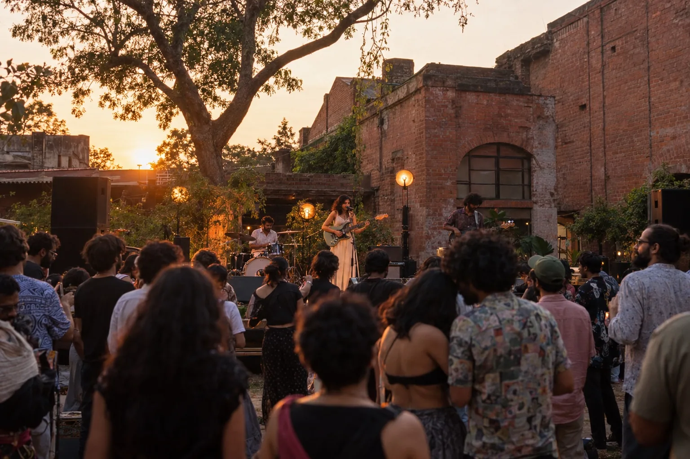
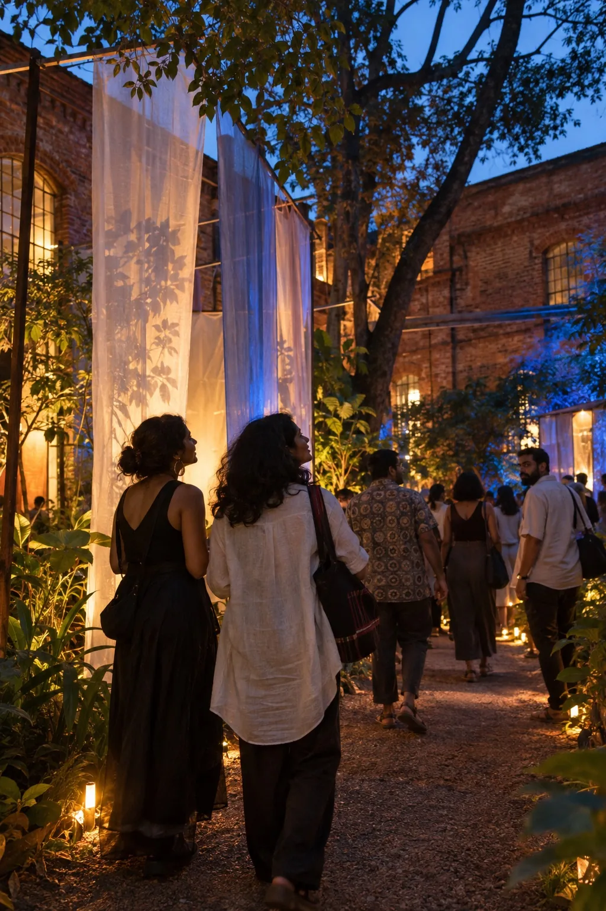
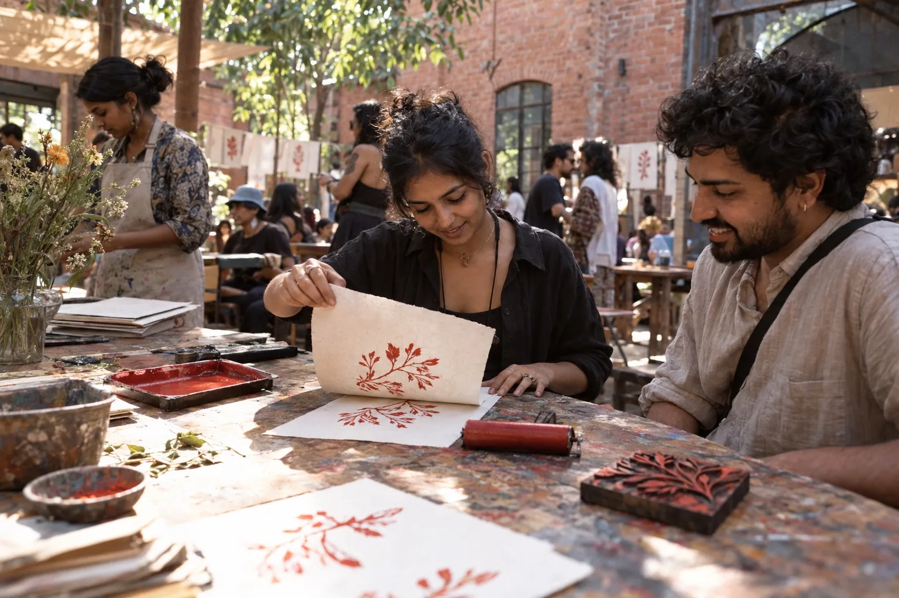
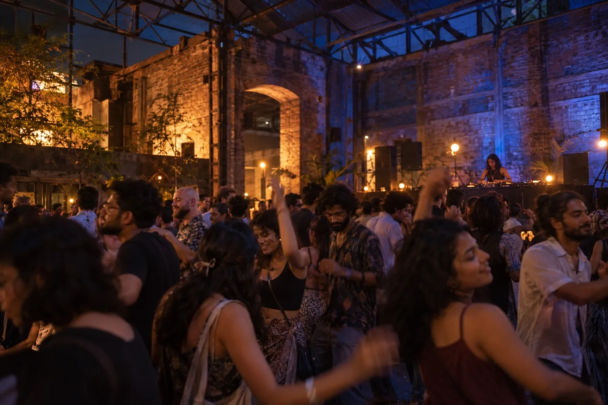

01 LIVE MUSIC / OPEN SKY
The courtyard
Live bands, up close. Find a new favourite voice
and a spot to stay for one more song.
AN INDEPENDENT MUSIC & ARTS FESTIVAL
A two-day escape into live music, interactive art
and hidden gems at the Old Dyeworks, Bengaluru.
STRANGERS. THEN A CHORUS.
A voice in the courtyard.
A record you’ve never heard.
And suddenly, you’re somewhere else.
INSIDE ELSEWHERE
01 LIVE MUSIC / OPEN SKY
Live bands, up close. Find a new favourite voice
and a spot to stay for one more song.
02 ART / MAKING / TAKING IT SLOW
Follow the light installations along the paths.
Come back after dark to see them change.
Make your own print on Sunday. Find food,
shady tables and space to simply be.
03 ELECTRONIC SETS / LATE DANCES
A former dye shed. A different frequency.
Follow the sound, and dance until 10 pm.
One pass. All three spaces.
Music, art & workshops included.
Food and drinks purchased separately.

ELSEWHERE / IN PICTURES
Imagined scenes · AI-generated
A song worth staying for.

Art, after the sun goes down.

A little ink. Something to take home.

One more dance.
YOUR TICKETS TO ELSEWHERE
06–07 February · The Old Dyeworks, Bengaluru
All music, art, workshops and return shuttle included.
Asha Vale · Soft Current · Koi Radio
Cyan Field’s light installation
Every artist. Every space. Time to get a little lost.
Save ₹900 compared with two day passes.
Mira Sol · Parallel Lines · Oru
Paper Club’s print workshop
2 pm–10 pm each day · 18+ · Taxes and booking fees included.
Food and drinks purchased separately. No camping.
Fictional festival. You can try the booking journey; no tickets are sold.